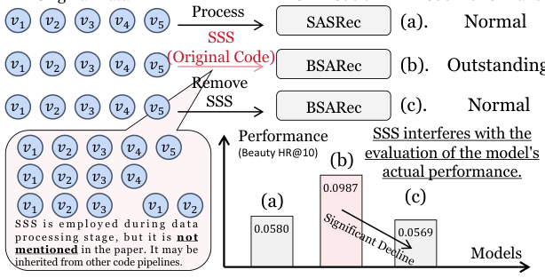
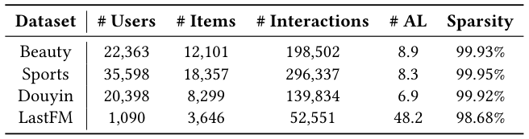
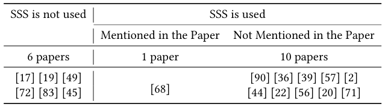
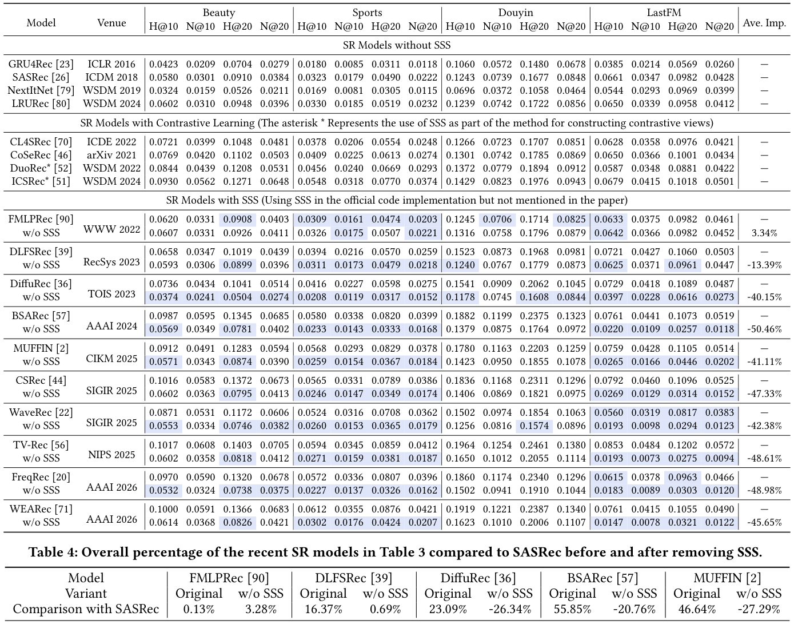
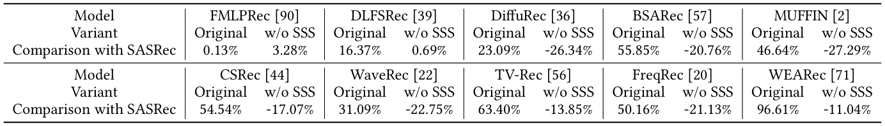
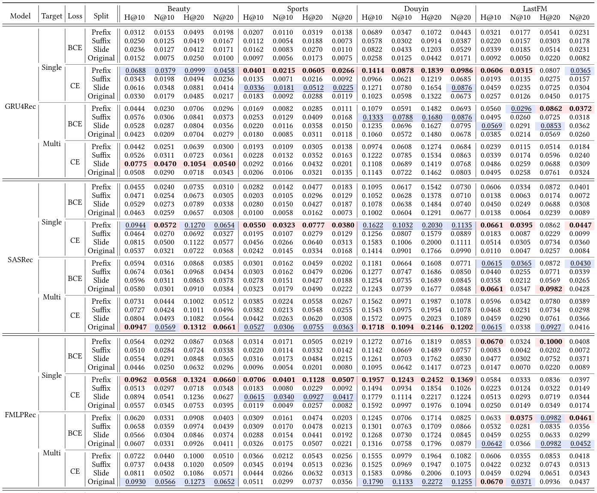
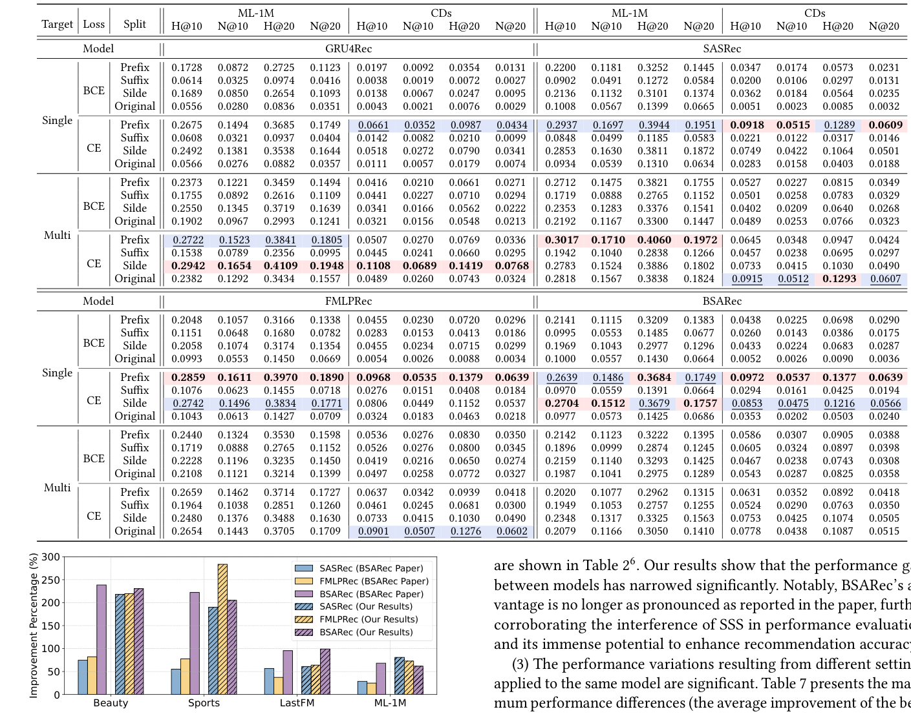
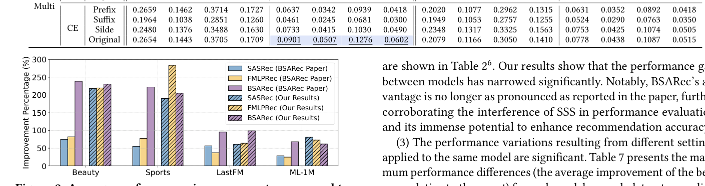

Pay Attention to Sequence Split: Uncovering the Impacts of Sub-Sequence Splitting on Sequential Recommendation Models (注意序列切分：揭示子序列切分对序列推荐模型的影响)
- 会议/期刊: SIGIR 2026
- 推荐链路定位: 召回 (Retrieval) — 序列推荐 Next-Item 预测骨干模型
- 研究方向: 序列与会话推荐 / 自监督对比学习与交互去噪（数据增强视角）
- 论文原文: https://arxiv.org/abs/2604.05309v1
- 开源代码: https://github.com/KingGugu/SSS4SR
TL;DR (核心速览)
本文是一篇面向序列推荐 (SR) 的可复现性与评估公平性研究。作者系统扫描 2022–2026 年 8 大顶会/2 大期刊的 17 篇 SR 骨干论文，发现 10 篇在数据读取阶段隐性使用了子序列切分 (SSS) 却未在论文中声明；移除 SSS 后 10 个模型中 7 个性能下降超 40%（最高 -50.46%），多数甚至跌破 2018 年的 SASRec。进一步实验表明 SSS 仅在"特定切分方式 + 目标策略 + 损失函数"组合下才有效，其机理是平滑训练目标分布、提升低频物品被选为目标的概率。在 LOO 划分 + Full-Ranking 协议下，作者呼吁统一数据切分以保障公平评估。
Background & Motivation (背景与动机)
- 领域背景与主流范式: 序列推荐以用户历史交互序列 \(s_u=[v_1,\dots,v_{|s_u|}]\) 预测下一物品，主流骨干包括 RNN (GRU4Rec)、CNN (NextItNet)、Transformer (SASRec)、全 MLP (FMLPRec)、线性循环单元 (LRURec) 以及频域混合模型 (BSARec)。为缓解数据稀疏，数据增强 (DA) 被广泛采用，其中子序列切分 (SSS，又称滑动窗口) 是最早且被证明有效的启发式 DA 之一。
- 现有方法局限 (Limitations of Prior Work):
- 隐性继承与评估失真：大量近期 SOTA 模型在官方代码的数据读取阶段默认执行 SSS（如 FMLPRec 的
input_ids[:i+1]循环），但论文正文与附录均未提及，导致性能增益被错误归因于架构创新。 - 增益来源不明：不同模型、不同切分方式下 SSS 带来的提升差异巨大，社区缺乏对"SSS 何时有效、为何有效"的系统性认识。
- 公平性缺失：未使用 SSS 的经典模型（如 SASRec）与隐性使用 SSS 的新模型在同一张表中比较，构成不公平对比。
- 核心挑战 (Key Challenge): 简单的"加数据增强"并不能解释现象——SSS 与损失函数（CE vs. BCE）、目标策略（单目标 vs. 多目标）、切分方式（前缀/后缀/滑窗）存在强耦合，错误组合甚至会损害性能，因此必须解耦这些因素才能定位真实增益来源。
- 核心洞察与切入点 (Key Insight): 作者通过代码级审查（Algorithm 1 给出 FMLPRec 官方实现中隐性 SSS 的真实代码片段）与受控实验，提出三点发现：(i) SSS 干扰模型真实性能评估；(ii) SSS 仅在特定组合下强效；(iii) SSS 通过均衡训练数据分布、提高不同物品被 targeting 的概率起作用。

Problem Formulation & Method (问题定义与方法架构)
1. 符号定义与输入表征 (Notations & Input Representations)
- 用户集 \(\mathcal{U}\)、物品集 \(\mathcal{V}\)；用户 \(u\) 的时序交互序列 \(s_u=[v_1,\dots,v_j,\dots,v_{|s_u|}]\)，\(v_j\in\mathcal{V}\)。
- 目标：\(\arg\max_{v^*\in\mathcal{V}} P(v_{|s_u|+1}=v^*\mid s_u)\)。
- 子序列记法 \(s_u^{i:j}=[v_i,v_{i+1},\dots,v_j]\)。
- 输入表征：物品 ID Embedding，维度 \(d=64\)；最大序列长度 \(N=50\)（所有数据集统一）；batch size 256。
2. 整体流水线 (Overall Architecture)
本文并非提出新模型，而是构建"代码审查 → 受控复现 → 分布分析 → 建议"的研究流水线：
flowchart TD
A["文献筛选: 2022-2026 八大会议+TOIS/TKDE, 17篇SR骨干论文"] --> B["代码级审查: 正文/附录/官方代码是否使用SSS"]
B --> C["受控复现: 10个隐性SSS模型 移除SSS前后对比 (LOO + Full-Ranking)"]
C --> D["因素解耦: 4骨干 x 3切分方式 x 2目标策略 x 2损失函数"]
D --> E["机理分析: 目标概率分布 / 输入-目标分布可视化"]
E --> F["建议: 统一数据切分 + 多设置综合评估"]3. 核心模块设计与数学原理 (Key Designs & Formulations)
(1) 三种子序列切分算子 (SSS)。给定原始训练序列 \(s_u\)：
- 前缀切分 (Prefix)：\(\{s_u^{1:2},s_u^{1:3},\dots,s_u^{1:|s_u|}\}=\text{Prefix-SSS}(s_u)\)，例 \([1,2,3,4]\to\{[1,2],[1,2,3],[1,2,3,4]\}\)，共 \(|s_u|\) 条。
- 后缀切分 (Suffix)：\(\{s_u^{|s_u|-1:|s_u|},\dots,s_u^{1:|s_u|}\}=\text{Suffix-SSS}(s_u)\)，例 \([1,2,3,4]\to\{[3,4],[2,3,4],[1,2,3,4]\}\)。
- 滑动窗口 (Sliding)：窗口长 \(T<|s_u|\)，\(\{s_u^{1:T},s_u^{2:T+1},\dots\}=\text{Sliding-SSS}(s_u,T)\)，例 \([1,2,3,4,5],T=3\to\{[1,2,3],[2,3,4],[3,4,5]\}\)。
(2) 两种目标策略 (Target Strategy)：
- 单目标：\(x_u=[v_1,\dots,v_{|s_u|-1}],\ y_u=v_{|s_u|}\)，每用户 1 个样本。
- 多目标：对每个 \(k\in\{2,\dots,|s_u|\}\)，\(x_u^k=[v_1,\dots,v_{k-1}],\ y_u^k=v_k\)，每用户 \(|s_u|-1\) 个样本。当 \(k\) 仅取 \(|s_u|\) 时退化为单目标。
关键设计直觉：前缀切分与多目标策略正交——前者把原始序列拆成多条子序列，后者在单条序列上产生多个监督信号。作者强调二者组合时的交互效应是理解 SSS 增益的核心。
(3) 机理分析算子：定义目标概率分布（每个物品在训练中作为预测目标的归一化频率）与输入-目标分布（每个目标关联的输入数量）。SSS 的作用可形式化为：将原本高度集中于少数高频物品的目标分布 \(P_{\text{target}}\) 重新加权，使低频物品的 targeting 概率从近零抬升，同时为每个目标累积更多输入对，从而增强输入→目标映射的泛化。
4. 训练目标、负采样与推理复杂度 (Optimization, Negative Sampling & Complexity)
- 损失函数：对比两种主流选择——BCE（逐物品二分类，配合负采样）与 CE（softmax 全物品多分类，天然支持排序）。实验结论：CE 整体优于 BCE，且与多目标策略组合时 SSS 增益趋近于零甚至为负。
- 训练负采样策略：BCE 依赖负采样；CE 为全物品 softmax，免负采样。评估阶段统一采用 Full-Ranking，不做负采样（作者明确指出采样评估会带来有偏发现）。
- 复杂度：SSS 将训练样本数从 \(O(|\mathcal{U}|)\) 扩至 \(O(\sum_u |s_u|)\)（前缀/后缀）或 \(O(\sum_u (|s_u|-T+1))\)（滑窗），训练时间近似线性增长；推理阶段与原始骨干完全一致（单序列前向 + 全库打分），无额外在线开销。原文未报告具体 GPU 显存与单 epoch 耗时数值。
Experimental Setup & Evaluation Protocol (实验设置与评估协议)
- 数据集统计与预处理（均采用 5-core 过滤，最大序列长度 50）：

| 数据集 (Dataset) | 用户数 (#Users) | 物品数 (#Items) | 交互数 (#Interactions) | 平均长度 (AL) | 稀疏度 (Sparsity) |
|---|---|---|---|---|---|
| Beauty (Amazon) | 22,363 | 12,101 | 198,502 | 8.9 | 99.93% |
| Sports (Amazon) | 35,598 | 18,357 | 296,337 | 8.3 | 99.95% |
| Douyin | 20,398 | 8,299 | 139,834 | 6.9 | 99.92% |
| LastFM | 1,090 | 3,646 | 52,551 | 48.2 | 98.68% |
| ML-1M | 6,041 | 3,417 | 999,611 | 165.5 | 95.16% |
| CDs (Amazon) | 75,258 | 66,443 | 1,097,592 | 14.6 | 99.97% |
- 数据划分方式 (Splitting Strategy): 采用 Leave-One-Out (留一法)——每序列最后一项为测试、倒数第二项为验证、其余为训练；SSS 仅作用于训练数据。该协议本身无时间穿越风险，但隐性 SSS 造成的训练/评估不一致正是本文批判的核心。
- 排名评测协议 (Ranking Protocol): Full-Ranking（全库未交互物品排序），明确拒绝负采样评估。
- 评价指标与显著性检验: HR@10/20 (H@K) 与 NDCG@10/20 (N@K)；Embedding 维度 \(d=64\)；Adam 优化器，lr=0.001，\(\beta_1=0.9,\beta_2=0.999\)；验证集 20 epoch 无提升则早停；5 次试验取平均。原文未报告配对显著性检验（\(t\)-test/Wilcoxon）。
Key Experimental Results (核心实验结果)
1. 主实验对比 (Main Results)


代表性结果摘录（Beauty 数据集，H@10）：
| 数据集 | 指标 | 无 SSS 经典基线 (SASRec) | 隐性 SSS 模型 (BSARec) | 移除 SSS 后 (w/o SSS) | 相对变化 |
|---|---|---|---|---|---|
| Beauty | H@10 | 0.0580 | 0.0987 | 0.0569 | -42.35%（跌破 SASRec） |
| Beauty | H@10 | 0.0580 | TV-Rec 0.1017 | 0.0602 | -40.81% |
| Beauty | H@10 | 0.0580 | CSRec 0.1016 | 0.0602 | -40.75% |
| Beauty | H@10 | 0.0580 | DiffuRec 0.0736 | 0.0374 | -49.18% |

关键结论：10 个隐性 SSS 模型中 8 个平均性能下降超 40%，5 个接近 50%（BSARec -50.46%、FreqRec -48.98%、TV-Rec -48.61%、CSRec -47.33%、WEARec -45.65%）；移除 SSS 后几乎所有模型不再优于 SASRec（表4 中相对 SASRec 的百分比由正转负，如 BSARec 从 +55.85% 变为 -20.76%）。
2. 消融实验与控制变量分析 (Ablation Study)


本文的"消融"本质是四因素受控网格实验（4 骨干 × 3 切分 × 2 目标策略 × 2 损失函数 + Original 对照），严格控制了模型参数量与数据规模：
- 目标策略：多目标整体优于单目标（提供更多早期位置监督信号）。
- 损失函数：CE 整体优于 BCE（softmax 全物品分布更契合多分类 next-item 任务）。
- 切分方式：前缀切分整体最优，滑窗次之，后缀最差（前缀更契合用户行为由远及近的时间累积模式）。
- 关键交互：单目标 + BCE 下三种 SSS 均显著优于 Original；但多目标 + CE 下 SSS 增益可忽略甚至为负——因为每个交互已作为目标参与训练且全物品排序优化，SSS 边际收益极小。
- 设置间方差极大（表7）：同一模型在 CDs 上最佳设置比最差设置高出近 17 倍，最高达 24 倍（GRU4Rec 2493.27%）。

3. 稀疏度/冷启动分桶与超参敏感度 (Sparsity Buckets & Hyperparameters)
- 分布层面分析（第 5 节）：SSS 后低频/冷门物品被选为目标的绝对频次与概率均上升，目标分布更均衡；每个目标关联的输入数量显著增加，缓解了"少数高频物品独占大量输入序列"的长尾失衡。多目标策略虽增加输入-目标对数量，但多为相似对，未能提升多样性，故有时反而不如单目标。
- 设置胜率统计（图3）：168 次最佳/次佳中，Single-CE-Prefix 占 48.2%（81 次），Single-CE-Slide 占 17.9%，Multi-BCE-Prefix 占 8.3%，Multi-CE-Slide 占 7.1%。
- 超参敏感度：原文未系统报告温度系数或层数敏感度（本文不涉及对比学习温度）；核心敏感因素是切分方式/目标策略/损失函数的组合。
- 线上 A/B 测试：原文仅包含离线实验，未报告线上 A/B 结果。
Highlights, Limitations & Critiques (亮点、局限与审稿级批判)
- 核心亮点与可迁移性:
- 评估审计范式：代码级审查 + 移除式复现的方法论可直接迁移到任何"隐性数据增强/预处理"的公平性审计（如图增强、序列截断策略）。
- 因素解耦设计：将 SSS 与损失函数、目标策略解耦的网格实验，为后续 DA 研究提供了标准对照框架。
- 机理可视化：目标概率分布与输入-目标分布分析，为"数据增强为何有效"提供了可解释的分布视角。
-
实践建议明确：优先 Single-CE-Prefix / Single-CE-Slide 设置；跨模型统一数据切分；多设置综合评估。
-
局限性与审稿视角批判 (Critical Limitations):
- 范围限定于经典 SR 骨干：作者明确排除跨域、多模态、多行为 SR 及以辅助任务（对比学习、重建）为主贡献的论文，但指出这些子领域可能继承含 SSS 的骨干代码，影响面可能被低估。
- 统计严谨性不足：仅报告 5 次试验均值，未做配对显著性检验，表3 中部分差距（如 FMLPRec 移除 SSS 后 Ave. Imp. 仅 3.34%）的显著性存疑。
- 机理分析偏定性：分布可视化直观但缺乏因果性验证（如干预实验），"前缀优于后缀"的解释（时间累积模式）被作者自认为超出本文重点、留待未来。
- 未报告效率开销：SSS 带来的训练样本膨胀对训练时间/显存的实际影响未量化。
- 建议的普适性边界：最优设置结论基于 6 个数据集与 4 个骨干，是否适用于工业超长序列或生成式推荐尚待验证。
Rating (四维评分)
- 方法创新性 (Novelty): ⭐⭐⭐（非新模型，但"评估审计 + 因素解耦"视角对社区有重要警示价值）
- 评估协议与实验扎实度 (Protocol & Experiments): ⭐⭐⭐⭐（LOO + Full-Ranking + 5 次试验 + 6 数据集 + 四因素网格，扎实；扣分于缺显著性检验）
- 写作与数学规范度 (Clarity & Rigor): ⭐⭐⭐⭐（切分/目标策略形式化清晰，代码片段佐证有力；机理部分偏定性）
- 工业落地与复现价值 (Industrial & Practical Value): ⭐⭐⭐⭐⭐（直接指导公平复现与基线对齐，代码已开源，对工业界基线选型与 A/B 归因极具警示意义）